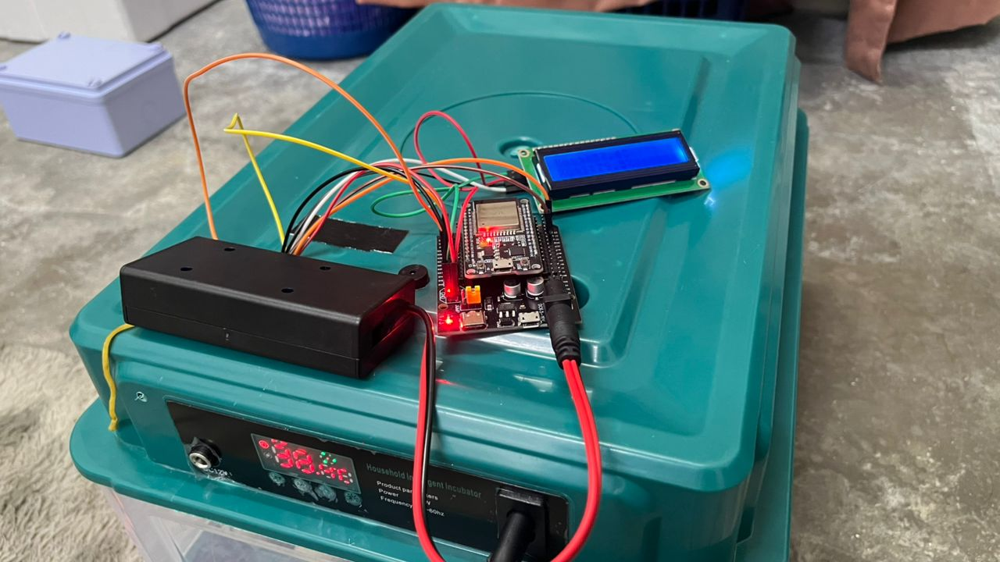

IoT Monitoring System
Egg Incubator Monitoring System for KV Pertanian Chenor, Pahang
An egg incubator monitoring system using ESP32 and sensors to monitor temperature and humidity during the incubation process.
Tools and Technologies
- ESP32
- SHT31 Temperature and Humidity Sensor
- LCD Display and Buzzer
- Arduino IDE
- Google Sheets and ThingSpeak
- Grafana / Looker Studio
- Telegram Notification
Key Activities
- Developed an ESP32-based monitoring system.
- Monitored temperature and humidity inside the incubator.
- Displayed sensor readings on an LCD.
- Integrated online data monitoring and Telegram alerts.
Project Outcome
Developed an intelligent monitoring system to help maintain suitable incubation conditions and provide alerts when attention is required.